This page brings together basic information about the Adlam script and its use for the Pular language. It aims to provide a brief, descriptive summary of the modern, printed orthography and typographic features, and to advise how to write Pular using Unicode.
Referencing this document
Richard Ishida, Pular (Adlam) Orthography Notes, 26-Dec-2023, https://r12a.github.io/scripts/adlm/fuf
Sample
Select part of this sample text to show a
list of characters, with links to more details. Source
Change size: 28px
The Adlam script was devised in the 1980s, and is nowadays used for
writing the Fulani language, alongside Latin and Arabic orthographies.
It is currently taught in Guinea, Nigeria, Liberia and other nearby
countries.
Pular or Pulaar is the way the Fula people refer to their language in
western dialects. In central and eastern dialects it is Fulfulde. The
English names Fula(h) and Fulani originally come from Manding and Hausa,
respectively. Sometimes the French name Peul (from Wolof) can be found.
The spread of the script is occurring remarkably rapidly across the
whole Pular/Fulfulde-speaking world, through a grass-roots movement. The
new script appeals to Pular speakers, and its use is having a positive
impact on general literacy among them.
𞤀𞤣𞤤𞤢𞤥 𞤆𞤵𞤤𞤢𞤪Adlam Pular
The script was developed by two teenage brothers, Ibrahima and
Abdoulaye Barry, so that their language could have its own script. The
name of the script ‘Adlam’ reflects the first four characters in the
repertoire: A, D, L, and M.
After teaching their own family and local villagers to use the script
for lessons in water hygiene and basic medical care, the brothers set up
learning centres in Togo, Senegal, and Benin. Eventually, the means were
available to print the script, and a newspaper and a number of printed
books were published.
The shapes of the glyphs used has evolved over time, and various
changes were standardised in 2019, however some fonts have not yet
caught up with these changes.
The Adlam script is an alphabet.
Both consonants and vowels are indicated by letters. See the table to
the right for a brief overview of features for the Pular language.
Adlam text runs right-to-left in horizontal lines. Unlike Arabic, numbers are
also written right-to-left.
The script can be written cursively or not. Non-joining fonts may
be used for titles, etc.
Adlam is bicameral, so all the numbers below need to be doubled to account for upper- and lowercase variants.
This orthography is an alphabet, where vowels are written using 5 vowel letters (10 counting both uppercase and lowercase) and 3 combining marks. Adlam has 7 basic, short vowel sounds, but only 5 vowel letters, so a nukta diacritic is used to create 2 more letters.
Long vowels are also indicated using one of 2 combining marks.
Standalone vowels are written using ordinary vowel letters and no special arrangements.
Adlam has a set of native numerals. Numbers are written from right-to-left, and therefore do not create bidirectional text.
According to Eversone, 𞥄U+1E944 ADLAM ALIF LENGTHENER can also be used above a consonant to indicate the sound aː without a vowel, eg.
𞤣𞥄dˉdaː
Long vowels can also written by following a vowel with an 𞤸 U+1E938 ADLAM SMALL LETTER HA that is not followed by a vowel, eg.
𞤧𞤫𞤸𞤪𞤫seere
Shaping & positioning
𞤭𞥅␣𞤵𞥅␣𞤫𞥊𞥅␣𞤮𞥊𞥅␣𞤫𞥅␣𞤮𞥅␣𞤢𞥄𞤋𞥅␣𞤓𞥅␣𞤉𞥊𞥅␣𞤌𞥊𞥅␣𞤉𞥅␣𞤌𞥅␣𞤀𞥄
The latest glyph reform introduces visual differences between the
shapes of the vowel lengthener and the alif lengthener above upper vs lowercase letters.p
Glyphs used to indicate a long vowel.
The 𞥊U+1E94A
ADLAM NUKTA used to distinguish sounds e and o normally
appears above the base letter, but when the sound is lengthened the
diacritic appears below the base character, while the
lengthening mark appears above, eg. 𞤫𞥊𞥅ɛ˙ːeː𞤮𞥊𞥅ɔ˙ːoː
The nukta should be typed and
stored before the lengthening mark.
Multipart vowels
Pular combines a basic vowel with one or two diacritics to represent 9 sounds. The diacritics include a vowel lengthener and/or in 4 cases a nukta (see basicV). A matching set of 9 graphemes represents the uppercase.
Standalone vowels
Standalone vowels are written using ordinary vowel letters and no special arrangements.
Consonants with no following vowel
No special mechanism is used to indicate the absence of a vowel. See also vlength.
Vowel sounds to characters
This section maps Pular vowel sounds to common graphemes in the Adlam orthography, grouped by lowercase ( l ) or uppercase ( u ). Click on a grapheme to find other mentions on this page (links appear at the bottom of the page). Click on the character name to see examples and for detailed descriptions of the character(s) shown.
i
1E92D
1E90B
iː
1E92D 1E945
1E90B 1E945
u
1E935
1E913
uː
1E935 1E945
1E913 1E945
e
1E92B 1E94A
1E909 1E94A
eː
1E92B 1E94A 1E945
1E909 1E94A 1E945
o
1E92E 1E94A
1E90C 1E94A
oː
1E92E 1E94A 1E945
1E90C 1E94A 1E945
ɛ
1E92B
1E909
ɛː
1E92B 1E945
1E909 1E945
ɔ
1E92E
1E90C
ɔː
1E92E 1E945
1E90C 1E945
a
1E922
1E900
aː
1E922 1E944
1E900 1E944
Consonants
The Pular Adlam orthography has no special features for the following.
Onset clusters, other than prenasalisation.
Syllable-final consonants.
Consonant lengthening.
Conjuncts or other shaping related to consonant clusters.
Consonant summary table
The following table summarises the main consonant to character assigments.
The left column is lowercase, and the right uppercase.
When a consonant is followed immediately by a glottal stop and then a
vowel, the glottal stop is represented using the diacritic 𞥇U+1E947 ADLAM HAMZA over the preceding consonant (see fig_glottal_stop).e,2
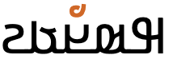
The glottal stop mark is positioned over the r in Qurʿan.show composition
Word-initially, the nyondal may or may not be usedsow, so either of the 2 following spellings are possible:
𞤲𞥋𞤺𞤵𞤪𞤫𞤲𞤺𞤵𞤪𞤫
Other places where the nyondal is not needed includesow:
when not preceded by a vowel
after a long vowel
If it appears between two joined letters, the
nasalisation character should not break that join.
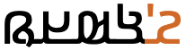
Word-initial prenasalisation. Note that there is no break between the joined letters.show composition
𞤲𞥋𞤺𞤵𞤪𞤫
This character was added to Unicode version 12. Prior to that, people
used an apostrophe, but that is not desirable, because it breaks the cursive joining.
Onsets
Other than the prenasalised consonants, Pular has no special features related to syllable onsets.
Finals
Pular has no dedicated characters to represent codas.
Consonant clusters
Pular has no conjuncts or other special mechanisms for handling consonant clusters.
As mentioned in nukta, letters that have
consonant modifier diacritics use a special code point, 𞥉U+1E949 ADLAM GEMINATE CONSONANT MODIFIER
that combines the gemination marker with the modifier.
Letters that combine with 𞥊U+1E94A ADLAM NUKTA should move
that diacritic below the base character and keep the gemination mark
above, eg. see fig_gemination.
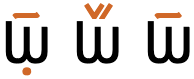
Three alternative ways gemination is indicated: basic diacritic (right), the diacritic with a v-shaped consonant modifier (middle), and with a nukta which it pushes below the base (left).
Consonant sounds to characters
This section maps Pular consonant sounds to common graphemes in the Adlam orthography, grouped by lowercase ( l ) or uppercase ( u ). Click on a grapheme to find other mentions on this page (links appear at the bottom of the page). Click on the character name to see examples and for detailed descriptions of the character(s) shown.
Sounds listed as 'infrequent' are allophones, or sounds used for foreign words, etc.
Stops
p
1E928
1E906
b
1E926
1E904
ɓ
1E929
1E907
ᵐb
1E932 1E94B 1E926
t
1E93C
1E91A
d
1E923
1E901
ɗ
1E92F
1E90D
tˤ
1E93C 1E948
1E91A 1E948
dˤ
1E923 1E948
1E901 1E948
ⁿd
1E932 1E94B 1E923
k
1E933
1E911
ɡ
1E93A
1E918
k͡p
1E942
1E920
ɡ͡b
1E940
1E91E
ᵑɡ
1E932 1E94B 1E93A
q
1E939
1E917
ʔ
1E947
Affricates
t͡ʃ
1E937
1E915
d͡ʒ
1E936
1E914
ᶮd͡ʒ
1E932 1E94B 1E936
Fricatives
f
1E92C
1E90A
v
1E93E
1E91C
θ
1E927 1E94A
1E905 1E94A
s
1E927
1E905
z
1E941
1E936 1E94A
1E91F
1E914 1E94A
sˤ
1E927 1E948
1E905 1E948
zˤ
1E936 1E948
1E914 1E948
ʃ
1E943
1E921
x
1E93F
1E91D
ɣ
1E93A 1E948
1E918 1E948
ʕ
1E922 1E948
1E900 1E948
h
1E938
1E916
ɦ
1E938 1E948
1E916 1E948
Nasals
m
1E925
1E903
n
1E932
1E910
ɲ
1E93B
1E919
ŋ
1E93D
1E91B
Other
w
1E931
1E90F
r~ɾ
1E92A
1E908
l
1E924
1E902
j
1E934
1E912
ʔʲ
1E930
1E90E
Numbers
Digits
Adlam uses native digits.
𞥐␣𞥑␣𞥒␣𞥓␣𞥔␣𞥕␣𞥖␣𞥗␣𞥘␣𞥙
Unlike other right-to-left scripts such as Arabic, Hebrew,
and Thaana, (but like N'Ko) the numbers are displayed right-to-left,
with the most significant digit first.e
This means that numbers don't produce bidirectional text in Adlam
The shape of 𞥖U+1E956 ADLAM DIGIT SIX was significantly changed by the 2019 glyph
shape reform to make it less similar to the letter HA.p
For thousands and decimal separators, Adlam uses a space and a
period, respectively.n
Text direction
Adlam text is written horizontally, with successive lines progressing down the page.
Inline text is right-to-left in the main but, as in most right-to-left scripts, embedded left-to-right script text is written left-to-right (producing 'bidirectional' text). However, like N'Ko but unlike Arabic, numbers are also written with digits in
right-to-left order.
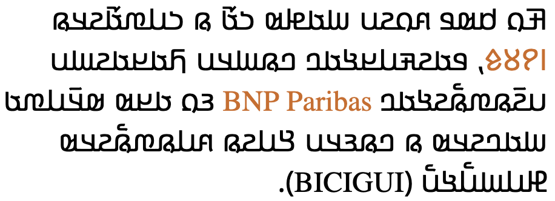
Adlam-script words are read right-to-left, starting from the right of this line, but 'BNP Paribas' is read left-to-right. The number 𞥑𞥙𞥘𞥕 (1985) on the other hand is written right-to-left.
The Unicode Bidirectional Algorithm automatically takes care of the ordering for all the text in fig_bidi, as long as the 'base direction' is set to RTL. In HTML this can be set using the dir attribute, or in plain text using formatting controls.
If the base direction is not set appropriately, the directional runs will be ordered incorrectly as shown in fig_bidi_no_base_direction.
𞤑𞤮𞤲𞤮 𞤳𞤮 𞤫 𞤬𞤫𞤣𞥆𞤫 PAIGC 𞤮 𞤶𞤫𞤴𞤢𞥄.
𞤑𞤮𞤲𞤮 𞤳𞤮 𞤫 𞤬𞤫𞤣𞥆𞤫 PAIGC 𞤮 𞤶𞤫𞤴𞤢𞥄.
The exact same sequence of characters with the base direction set to RTL (top), and with no base direction set on this LTR page (bottom).
Unicode provides a set of 10 formatting characters that can be used to control the direction of text when displayed. These characters have no visual form in the rendered text, however text editing applications may have a way to show their location.
In Unicode 6.1, the Unicode Standard added a set of characters which do the same thing but also isolate the content from surrounding characters, in order to avoid spillover effects. They are U+2067 RIGHT-TO-LEFT ISOLATE (RLI), U+2066 LEFT-TO-RIGHT ISOLATE (LRI), and U+2069 POP DIRECTIONAL ISOLATE (PDI). The Unicode Standard recommends that these be used instead.
There is also U+2068 FIRST STRONG ISOLATE (FSI), used initially to set the base direction according to the first recognised strongly-directional character.
This section brings together information about the following topics:
writing styles;
cursive text;
context-based shaping;
context-based positioning;
baselines, line height, etc.;
font styles;
case & other character transforms.
Adlam is usually cursive, ie. letters in a word are joined up (see cursive and fig_joined_writing_style),
however a non-cursive writing style (see fig_unjoined_writing_style)
is sometimes used, mainly as display fonts for books and article
titles as well as educational content (because the unconnected script
is easier to learn).n
Adlam content is usually in a cursive writing style.
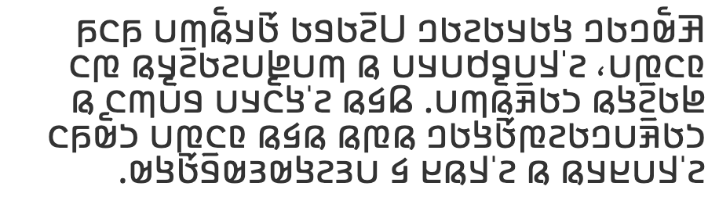
An unjoined writing style is used for titles and
educational content.
Cursive text
When Adlam is cursive (see writing_styles), letters in a word are joined up. Fonts need to produce the appropriate joining form for a letter, according to its visual context, but the code point remains the same. This results in four different glyphs for most letters (including an isolated glyph).
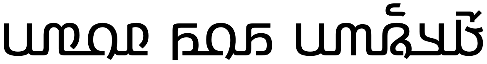
Cursive connections. Note the small variation in initial
and final form of 𞤬.
The cursive treatment doesn't produce major variations of the
essential part of the glyph for a character (unlike Arabic), but there
are some small adaptations.
Unlike Arabic and Syriac scripts, no glyphs join only on one side.
Cursive joining forms
Unlike Arabic or Syriac, joining forms generally only differ by the addition of a small baseline extension. A few items in the table are highlighted that have very small additional changes, most amounting to just a small extension of a stroke. Also, whereas Arabic and Syriac re-use a number of basic shapes to create additional letters by adding diacritics, in Adlam each letter shape is different. fig_joining_forms shows the basic shapes in Adlam and what their joining forms look like.
ZWJ permits a letter to form a cursive connection without a visible neighbour.
ZWNJ prevents two adjacent letters forming a cursive connection with each other when rendered.
Observation: The ZWJ only works on the left side of glyphs in fig_joining_forms if the table cell's base direction is set to RTL.
Context-based shaping & positioning
See just above for shaping related to cursive joining.
See variants for information about recent
glyph shape changes.
Context affects the shapes of certain diacritics when placed over
upper vs lowercase letters.p
𞥊U+1E94A
ADLAM NUKTA usually sits above the letter it
modifies, but if the letter is also lengthened or geminated, it moves
below the letter and leaves the lengthening/gemination diacritic
above.
Letterform slopes, weights, & italics
The Kigelia font may be the first italicised Adlam tyeface, but its
development was based on requests from the community of users.
Discussion with the community led to an italic form that leans to the
right (unlike N'Ko).g,#issuecomment-512911833
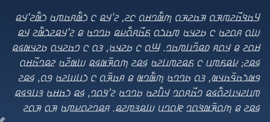
An example of an italic typeface for Adlam.
Text segmentation
Grapheme boundaries
A grapheme is a user-perceived unit of text.
The Unicode Standard uses generalised rules to define 'grapheme
clusters', which approximate the likely grapheme boundaries in a
writing system.
tbd
Word boundaries
The concept of 'word' is difficult to define
in any language (see What
is a word?). Here, a word is a vaguely-defined, but recognisable
semantic unit that is typically smaller than a phrase and may comprise
one or more syllables.
The question mark, ؟U+061F
ARABIC QUESTION MARK, is from the Arabic block,
but the comma and semicolon are ⹁U+2E41 REVERSED COMMA and ⁏U+204F
REVERSED SEMICOLON, respectively, rather than
the Arabic comma and semicolon. (The Arabic comma/semicolon are only
used as carryovers from the older Adlam fonts.)n
𞥟U+1E95F
ADLAM INITIAL QUESTION MARK and 𞥞U+1E95E ADLAM INITIAL EXCLAMATION MARK
are used to begin a phrase that is a question or exclamation,
respectively, much like ¿ and ¡ in Spanish. The phrase ends using an
Arabic question mark or ASCII exclamation mark,e,2 eg. 𞥟 𞤢𞤤𞤢𞥄 ؟¿ alaˉ ?no?𞥞𞤢𞤤𞤢𞥄 !¡ alaˉ !no!
The shapes of these question and exclamation punctuation marks were significantly changed in the
2019 shape reform, with the aim of making them more visually appealing.
Observation: The punctuation marks appear to be separated from the rest of
the text by a space.
Bracketed text
(␣)
Pular commonly uses ASCII parentheses to insert parenthetical information into text.
In this text sample, the parenthesis on the right is U+0028 LEFT PARENTHESIS, and the one on the left is U+0029 RIGHT PARENTHESIS (see mirrored_characters).
Mirrored characters
The words 'left' and 'right' in Unicode names for parentheses, brackets, and other paired characters should be ignored. LEFT should be read as if it said START, and RIGHT as END. The direction in which the glyphs point will be automatically determined according to the base direction of the text.
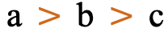 b > c" data-notes="Scheherazade New 48px">
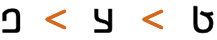 ب > ج" data-notes="Scheherazade New 48px">
Both of these lines use >U+003E GREATER-THAN SIGN, but the direction it faces depends on the base direction at the point of display.
The number of characters that are mirrored in this way is around 550, most of which are mathematical symbols. Some are single characters, rather than pairs. The following are some of the more common ones.
(␣)␣<␣>␣[␣]␣{␣}␣«␣»␣‹␣›
Quotations & citations
Observation: Adlam text appears to use quote marks “U+201C LEFT DOUBLE QUOTATION MARK at the start, and ”U+201D RIGHT DOUBLE QUOTATION MARK at the end. Note that these characters are not mirrored during display. This means that left indicates use on the left, and right indicates use on the right, unlike other types of paired punctuation.
Emphasis
tbd
Abbreviation, ellipsis & repetition
Observation: Adlam text appears to use the 3-dot ellipsis. Unicode has …U+2026 HORIZONTAL ELLIPSIS for that.
Inline notes & annotations
tbd
Other punctuation
tbd
Other inline text decoration
tbd
Line & paragraph layout
Line breaking & hyphenation
Adlam text breaks primarily at the spaces around words. In-word breaks using hyphenation also occur.
Breaking between Latin words.
When a line break occurs in the middle of an embedded left-to-right sequence, the items in that sequence need to be rearranged visually so that it isn't necessary to read lines from top to bottom.
latin-line-breaks shows how two Latin words are apparently reordered in the flow of text to accommodate this rule. Of course, the rearragement is only that of the visual glyphs: nothing affects the order of the characters in memory.
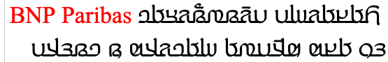
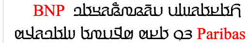
The lower of these two images shows the result of decreasing the line width, so that text wraps between a sequence of Latin words.
Line-edge rules
As in almost all writing systems, certain punctuation characters should not appear at the end or the start of a line. The Unicode line-break properties help applications decide whether a character should appear at the start or end of a line.
The following list gives examples of typical behaviours for some of the characters used in Adlam text. Context may affect the behaviour of some of these and other characters.
Click/tap on the characters to show what they are.
“ ‘ ( 𞥞 𞥟 should not be the last character on a line.
” ’ ) . ⹁ ! ؟ % should not begin a new line.
⁏ 𞥋 … should not allow breaks on either side, unless there is a space.
In-word line-breaks
Fula text uses hyphenation at the end of a line to reduce excess space during justification. See an example in fig_hyphenation.
Text alignment & justification
Fully-justified text in Pular is produced by adding spaces between words, but long words may be hyphenated to reduce the overall space added.g
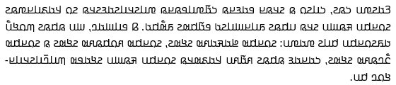
Full justification achieved by spacing plus hyphenation.
In the past, justification involved stretching the baseline, using ـ, but the modern preference is to use interword spacing, instead. See also historical_justification.
Text spacing
tbd
Baselines, line height, etc.
Adlam uses the so-called 'alphabetic' baseline, which is the same as for Latin and many other scripts.
Adlam places vowel and tone marks above base characters, and can also add combining characters below the line. The resulting complexity means that the vertical resolution needed for clearly readable Pular text is higher than for English, or most Latin text.
To give an approximate idea, fig_baselines compares Latin and Adlam glyphs from the Noto Sans font. The basic height of lowercase Adlam letters is typically around the Latin x-height, however diacritics reach well beyond the Latin ascenders, creating a need for larger line spacing. The vertical height is further increased when dealing with capital letters.
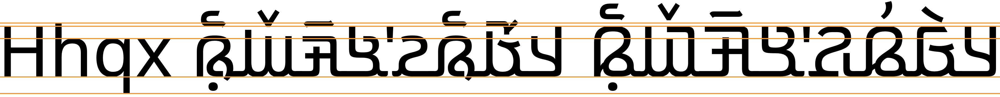
Font metrics for Latin text compared with Adlam glyphs in the Noto Sans Adlam font.
Counters, lists, etc.
You can experiment with counter styles using the Counter styles converter. Patterns for using these styles in CSS can be found in Ready-made Counter Styles, and we use the names of those patterns here to refer to the various styles.
The Pular orthography uses a numeric style using native digits.
Numeric
The adlam numeric style is decimal-based and uses these digits.rmcs
𞥑␣𞥒␣𞥓␣𞥔␣𞥕␣𞥖␣𞥗␣𞥘␣𞥙␣𞥐
Examples:
𞥒␣𞥓␣𞥔␣𞥕␣𞥒𞥒␣𞥓𞥓␣𞥔𞥔␣𞥕𞥕␣𞥒𞥒𞥒␣𞥓𞥓𞥓␣𞥔𞥔𞥔␣𞥕𞥕𞥕
Prefixes and suffixes
The default list style uses a full stop + space as a suffix.
Observation: The Winden Jangen site has scans of a number of books which use ordered lists, and they use Adlam numbers (see fig_cs_numeric).
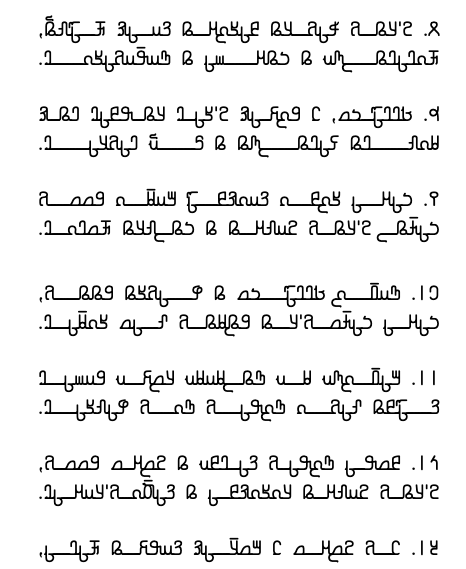
Numeric counter styles.
Styling initials
Drop caps can be found in Fulah text written with the Adlam script (more commonly than raised caps).
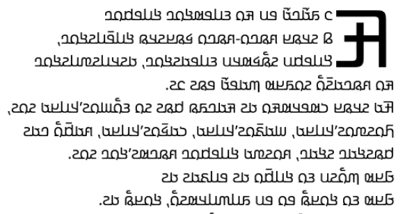
Drop caps in Adlam script text.
The initial character and the character that follows it are unjoined.§
Page & book layout
This section is for any features that are specific to thisScript and that relate to the following topics:
general page layout & progression;
grids & tables;
notes, footnotes, etc;
forms & user interaction;
page numbering, running headers, etc.
General page layout & progression
Pular books, magazines, etc. written using the Adlam script are bound on the right-hand side, and pages progress from right to left.
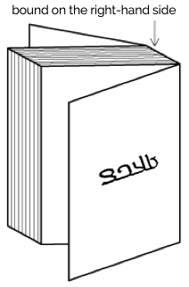
Binding configuration for Adlam books, magazines, etc.
Columns are vertical but run right-to-left across the page.
Layout direction
The right-to-left orientation of the script affects the direction of page layout, and of the layout of items within the page.
The page shown in fig_layout is the mirror-image of pages in, say, French. Note the various navigation items on the page, and the progression of numbers at the bottom of the page.
An Adlam web page, where the layout and navigational aids are also ordered right-to-left.
On the other hand, the video controls assume a LTR direction. This is mostly constrained by technology at the moment, and whether or not this is acceptable is still being debated.
Grids & tables
tbd
Notes, footnotes, etc
tbd
Forms & user interaction
tbd
Page numbering, running headers, etc
tbd
Historical information
Orthographic development & variants
In 2019 the design of Adlam letter glyphs was overhauled in a
proposal to the Unicode Consortium, which resulted in changes to the
code chart. p
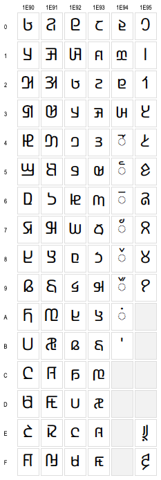
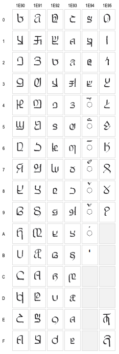
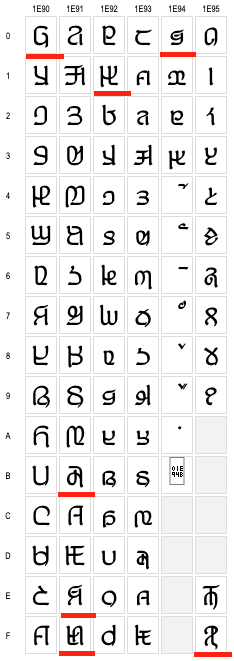
Glyphs in the Unicode Adlam code chart showing pre-2019
(left) and post-2019 (right) shapes.
Typical changes involved standardising the shapes across cursive
forms, better distinctions between lower and uppercase forms, removal
of some ascenders to avoid diacritic collisions, and then addition of
some small ascenders to help distinguish joined forms.
There were also some significant shape changes, particularly to make
supplementary letters look more like those used for similar, standard
sounds, or to make letters easier to read.
Although there are not many Adlam Unicode fonts, and they will be
changed, legacy forms are likely to persist for some time alongside
the new forms.
The 2017 release of the Noto Sans Adlam font (still in use in early 2020)
contained a set of glyphs that sometimes matched one or other of the
shapes shown in variant_shapes, and sometimes
used completely different shapes from either. The Noto fonts were updated to the new shapes in September 2020.
Click
to also show in variant_shapes shapes produced by the Noto Sans Adlam font at the
start of 2020. Red underlines highlight some characters that don't
resemble either of the other charts.
Historical approaches to justification
In the early stages of Adlam typography it was quite common to see full justification of printed text that was produced by stretching baselines, rather than by adjusting inter-word spaces. This was influenced by the use of keyboards based on Arabic code points. Handwritten documents, however, were not justified in this way.
Observation: The Winden Jangen site has scans of a number of books which apply full justification. The method of justification appears to be elongation of the baseline, with no affect on the inter-word spacing. See fig_justification. In narrow columns this can produce some exaggerated stretching, as seen in fig_justification_wide. There are many passages in the samples available that apply this exaggerated stretching. Some content also applies justification to the last line in a paragraph, which sometimes produces even wider elongations.
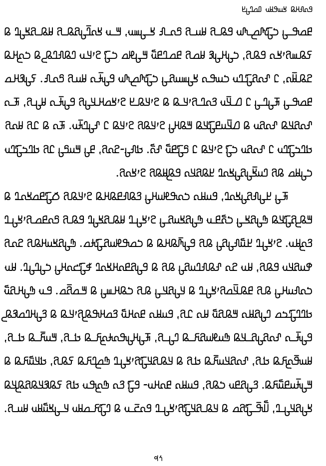
Full justification achieved by stretching baselines.
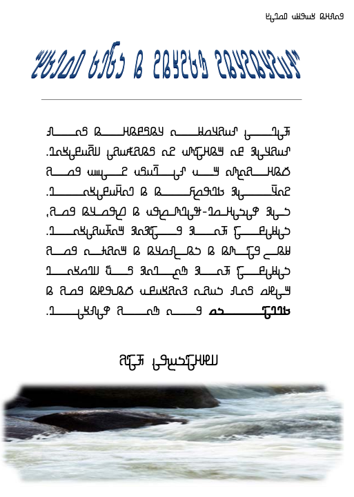
Full justification achieved by stretching baselines.